#TheArtistsWay is an ongoing exploration of ways artists self help in the 21st century.
Having strong background and work experience in human center design, I believe the core of design, whether for a digital app or physical product, lies in determining the best sets of tools needed to accomplish a business goal. My best asset is my attention to details. Quality work requires time craftmanship and time, but creativity requires acting in the moment. The result of this intersecting paradox create the melody that I am most in love with. Welcome to my portfolio.
 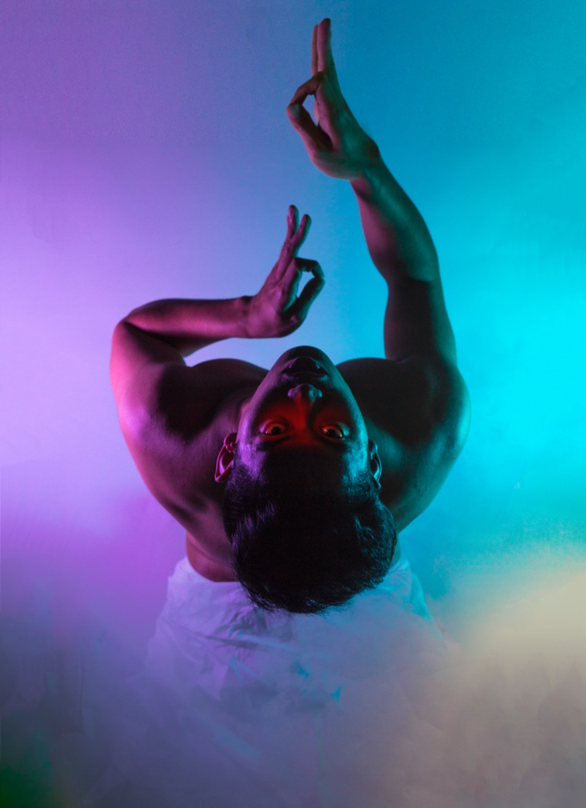
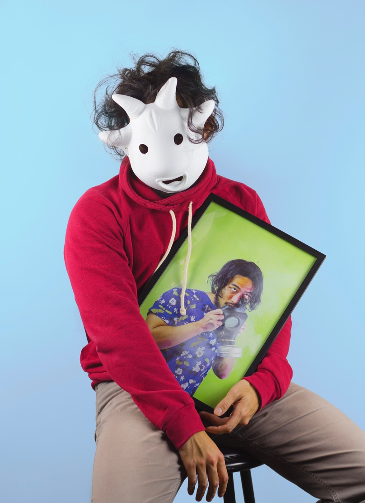
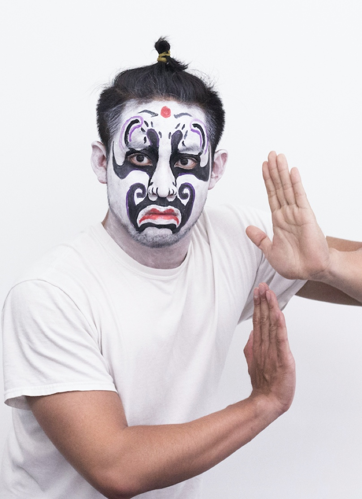
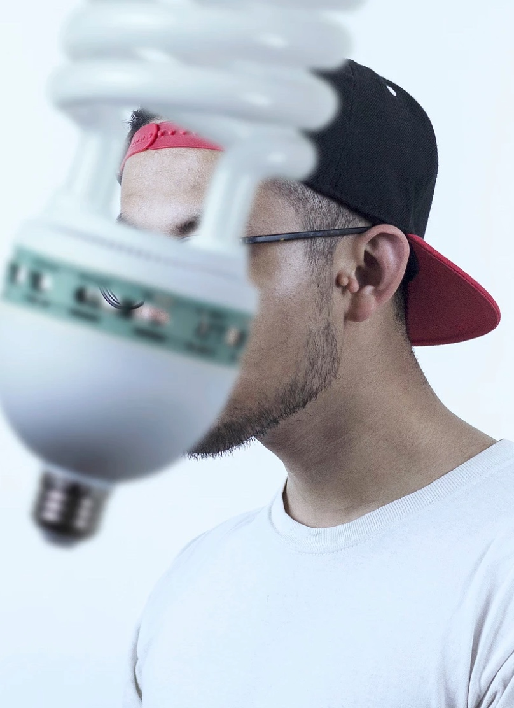
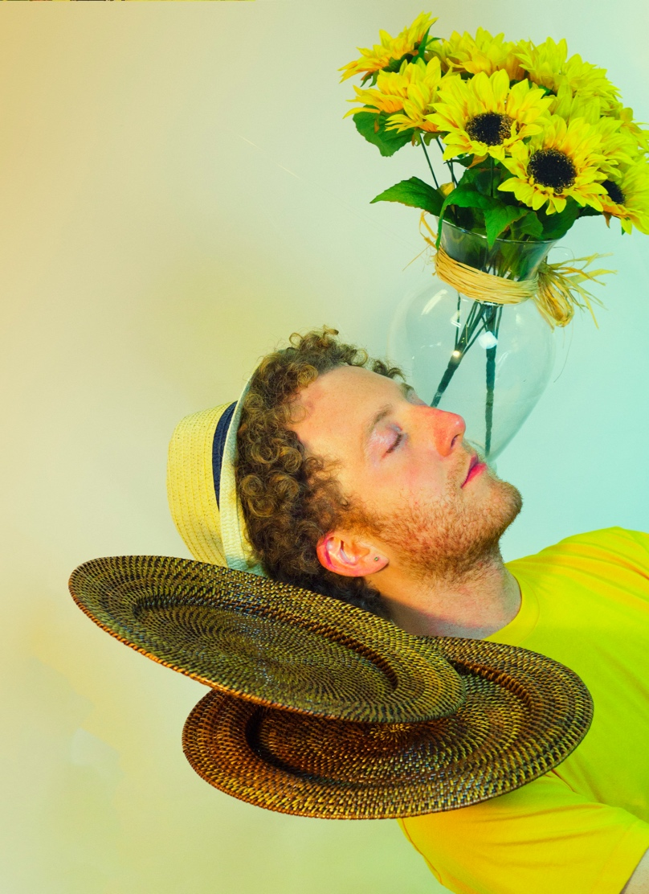
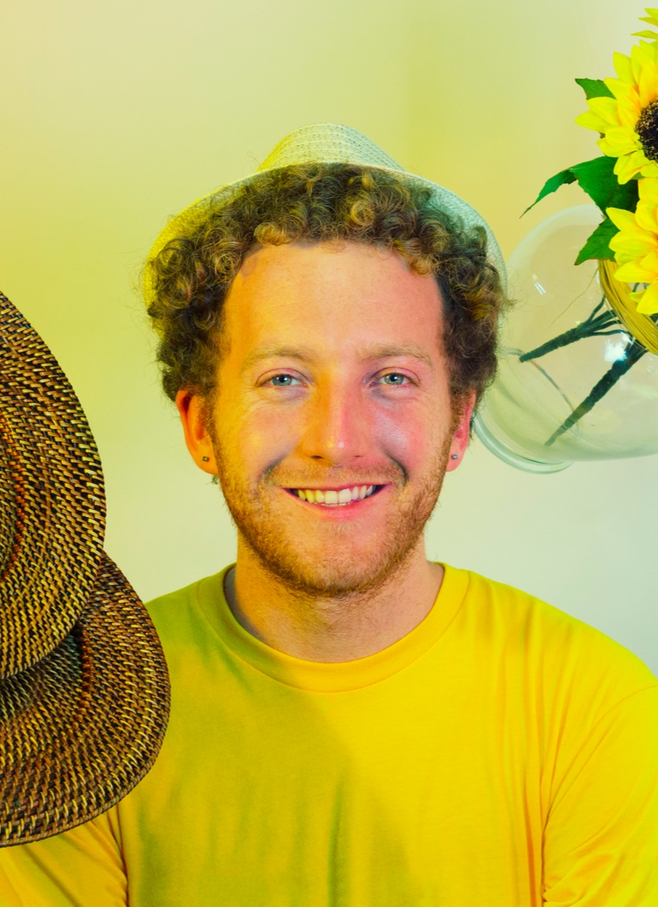
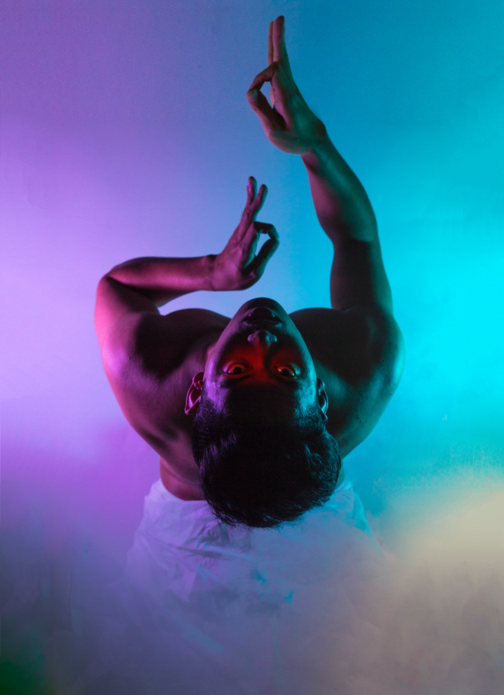
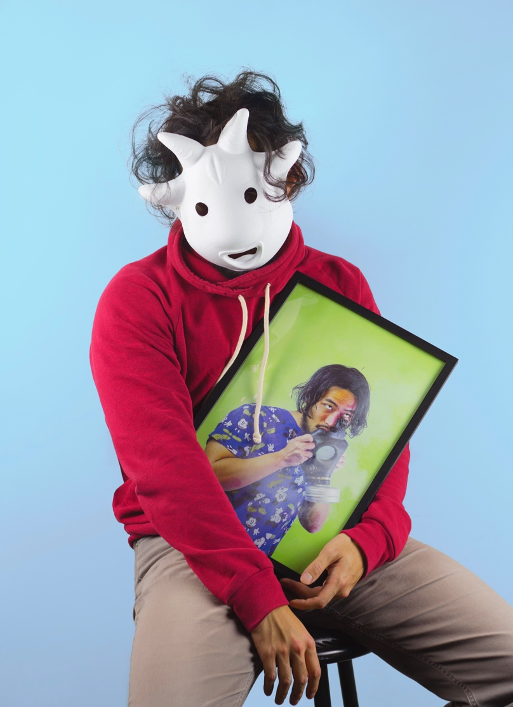
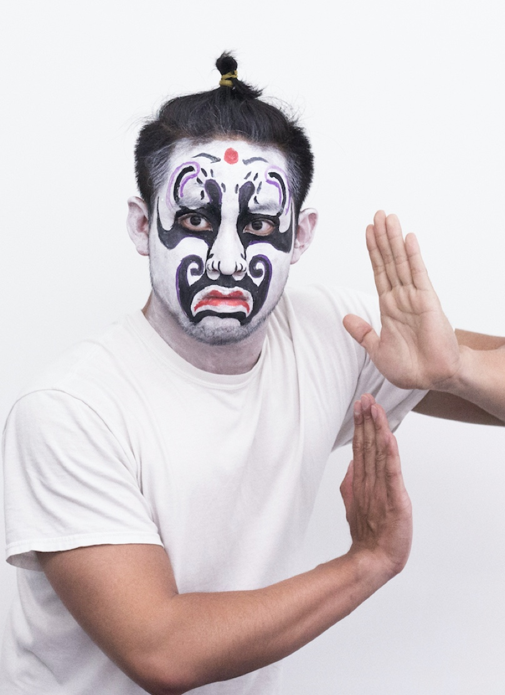
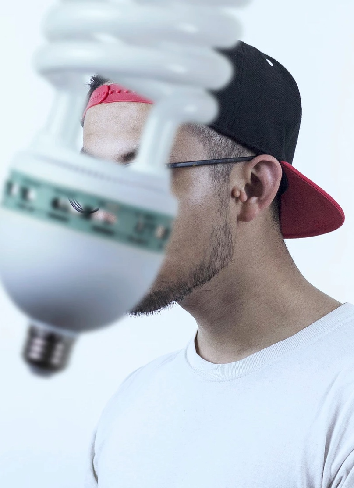
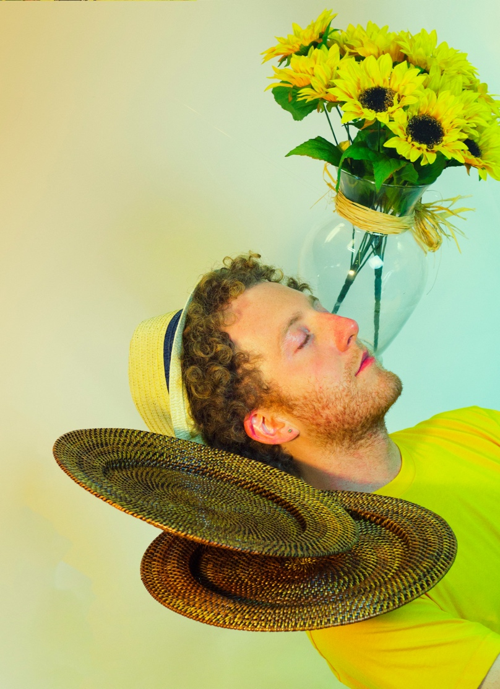
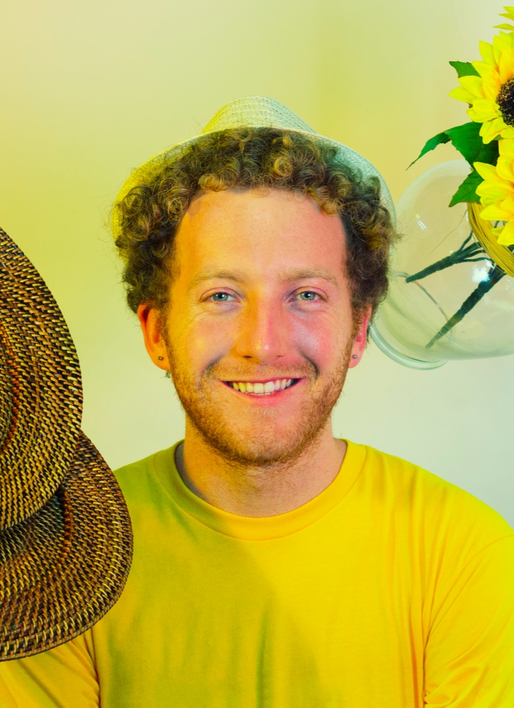
Process
Having strong background and work experience in human center design, I believe the core of design, whether for a digital app or physical product, lies in determining the best sets of tools needed to accomplish a business goal. My best asset is my attention to details. Quality work requires time craftmanship and time, but creativity requires acting in the moment. The result of this intersecting paradox create the melody that I am most in love with. Welcome to my portfolio.
Read More
Having strong background and work experience in human center design, I believe the core of design, whether for a digital app or physical product, lies in determining the best sets of tools needed to accomplish a business goal. My best asset is my attention to details. Quality work requires time craftmanship and time, but creativity requires acting in the moment. The result of this intersecting paradox create the melody that I am most in love with. Welcome to my portfolio.